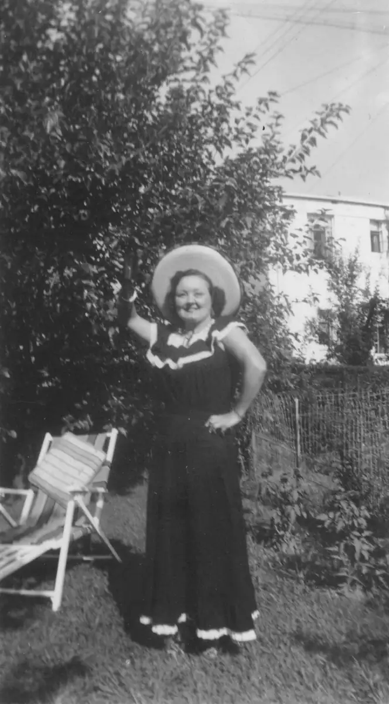

Home / Unknowns / unk000-00001
unk000-00001
← Return to Unknowns
← Prev unk000-00002 →
Unknown woman, possibly from LaBelle's (wife of Taylor Brown) Cook family. Location unknown, but I suspect from that big bush in the background that it was taken at Taylor Brown's home. This might be Betty Cook. See brn007-00010.tif.

Actual size: 2.31" × 4.18" · Scanned at: 600 dpi · 3.48 MP (1387×2508) · Image date: 8 Jul 2005 · Comment date: 6 May 2006
Copyright © 2005–2026 Thomas Krehbiel. Images are freely distributable for personal use. For more information about these images contact Thomas Krehbiel (tkrehbiel@gmail.com).
Photos were scanned at either 300dpi or 600dpi, depending on the quality of the photograph. Slides were scanned at 1800dpi. Documents were scanned at 100dpi or 150dpi. Photoshop enhancements: most images have had their contrast improved. Some color photos were corrected to restore color balance. Some blurry images were mildly sharpened. Occasionally dust, scratches, and blemishes were removed digitally.
{kind=link}